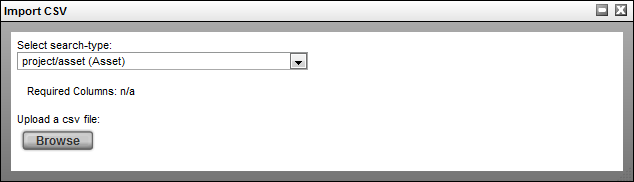
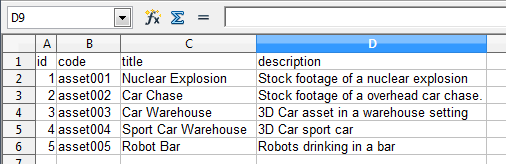
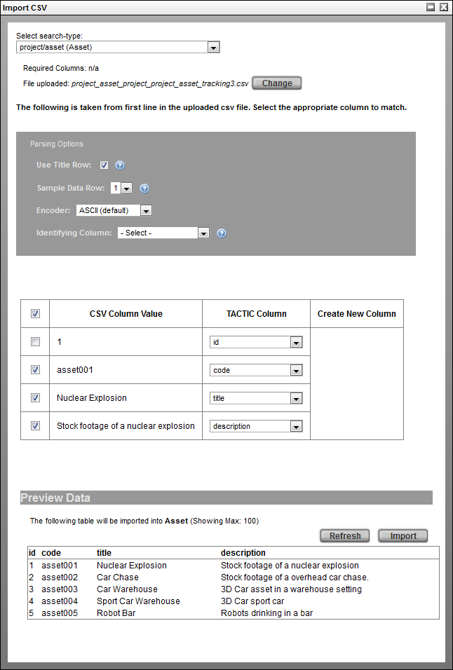

Data can be imported into TACTIC and associated with the appropriate columns. Since TACTIC is based on a table system, data can be exported as a CSV file for easy manipulation in a spreadsheet program.
Note
For more information on exporting existing CSV data, go to the section, "Exporting CSV Data."
To import a CSV file:
-
Go to Gear Menu -> File -> Import CSV ...

-
Select an sType or copy and paste the data from a spreadsheet. Once an sType is selected, the required columns will be displayed to the right of the drop down. Although these aren't the only columns that can be imported for this sType, they represent the minimum requirements for a successful import.

-
Browse and upload the CSV file. The CSV file is the raw format required by TACTIC. Below is an example of the contents of a CSV file:
"id","title","description" 1,"Nuclear Explosion","Stock footage of a nuclear explosion" 2,"Car Chase","Stock footage of a overhead car chase." 3,"Car Warehouse","3D Car asset in a warehouse setting" 4,"Sport Car Warehouse","3D Car sport car" 5,"Robot Bar","Robots drinking in a bar"
Below is an example of a CSV file being manipulated in a spreadsheet application.

-
Click the Upload button. The TACTIC system will introspect the CSV file and fill in the rest of the import interface.

-
Parsing Options

Use Title Row When checked, this import will read the first row in the file to determine which item columns are being imported. Sample Data Row Specify a row in the file to use as a sample for the data import. Encoder Select the encoding format for the data: ASCII (default), UTF-8, Excel ISO 8859-1 Identifying Column Select the column which unique identifies the corresponding row in the table to update the data with. -
Import
The bottom of the page shows a preview of the import results. Hitting the Import button will start the CSV import.